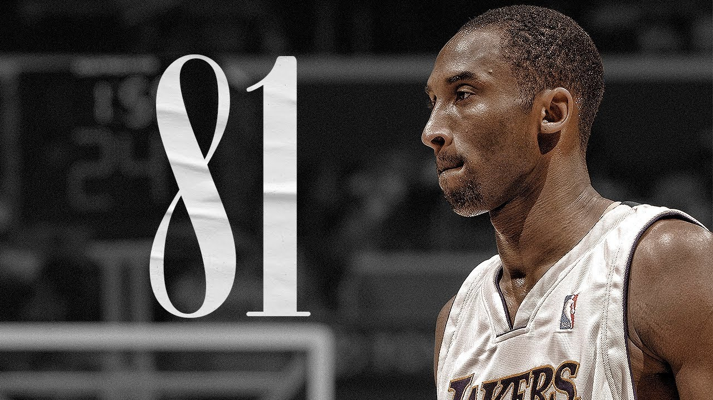
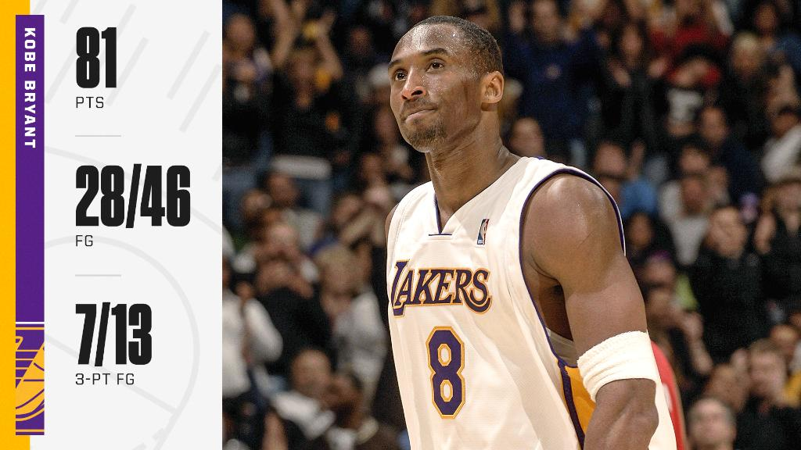
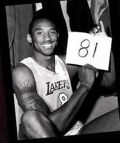
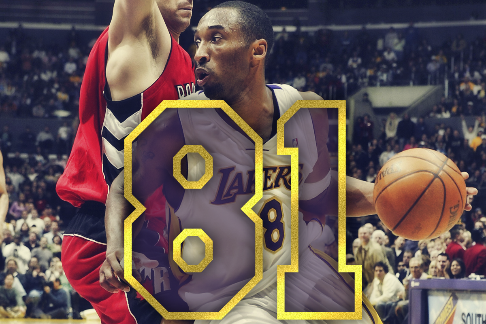
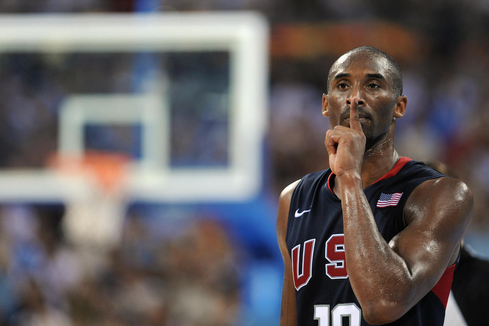
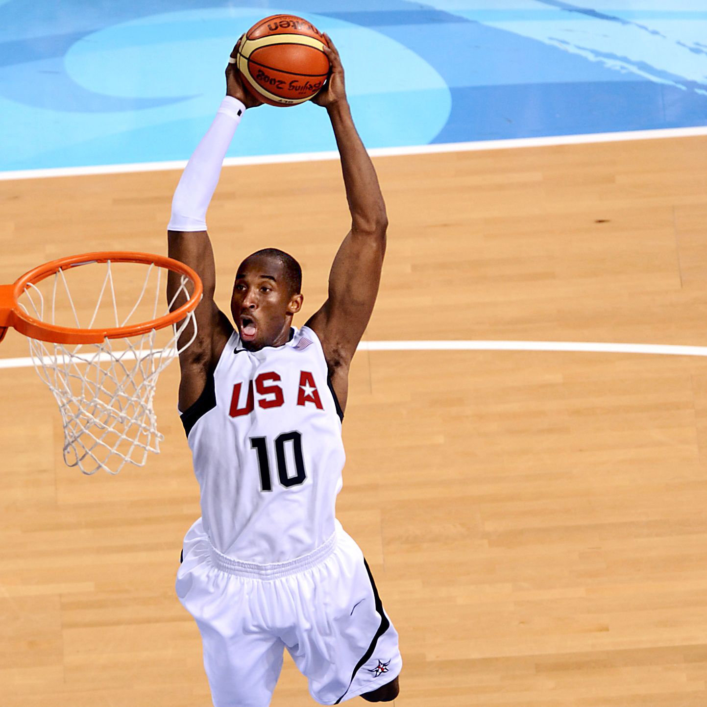
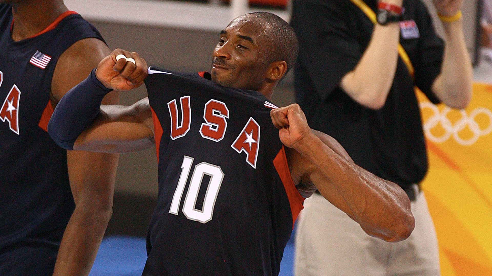
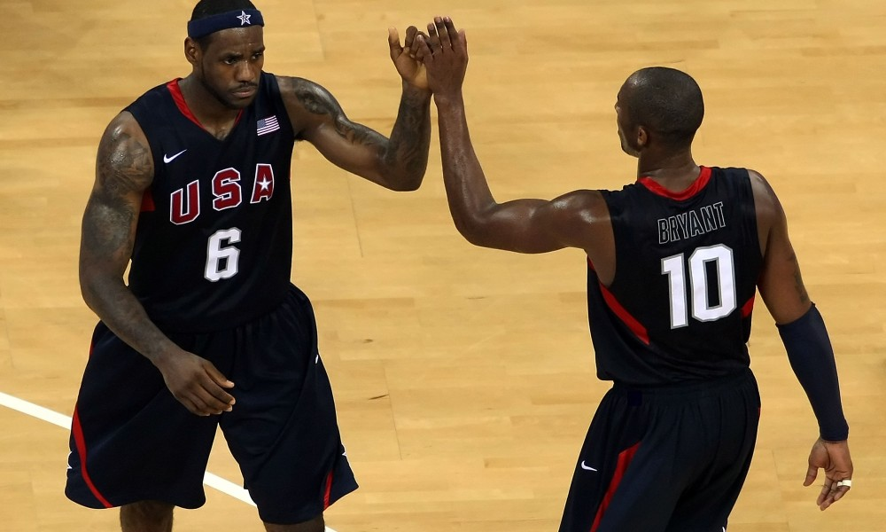

Omlympian
2006.On Jan. 22, 2006, Bryant scored a career-high 81 points against the Toronto Raptors.
It’s the second-highest points total in a single game in league history. Wilt Chamberlain set the record with 100 points in 1962.
Bryant shot 26-of-46 from the field, including draining seven from beyond the arch.
When Wilt Chamberlain scored 100 points against the New York Knicks on March 2, 1962, the NBA world knew it would never see anything like it again.
The fact that there were no television cameras to capture the event only added to the legend of the performance.
Since that game, the 70-point margin had been crossed six times and just twice since 1963, but that was as far as it went.
It seemed David Robinson’s 71-point game in 1994 against the Clippers was as high as anyone would ever reach again.
That was until Kobe Bryant burned the Toronto Raptors on January 22, 2006 in one of the greatest single-game performances in NBA history.
As the Lakers scored a 122-104 comeback victory at home, Bryant finished with 81 points on 28-of-46 shooting, including 7-of-13 from 3-point range, and 18-of-20 from the foul line.
The accomplishment stunned even Bryant himself.
“Not even in my dreams,” Bryant said. “That was something that just happened. It’s tough to explain. It’s just one of those things"
“It really hasn’t, like, set in for me. It’s about the `W,’ that’s why I turned it on. It turned into something special.
To sit here and say I grasp what happened, that would be lying.”
In a season Bryant led the league in scoring with 35.4 ppg, his game against Toronto had even the most seasoned NBA observers starstruck.
Teammates and staff alike were asking Bryant to autograph copies of the box score after the game. Lakers public address announcer Lawrence Tanter was telling fans to save their ticket stubs.
Then-Lakers owner Jerry Buss described the game as “like watching a miracle unfold.”




2008.The United States Men’s Basketball team suffered a humiliating finish in the 2004 Summer Olympics in Athens, Greece.
Despite being the overwhelming favorites to win the gold medal, the squad only earned the bronze. That changed when Bryant joined the squad ahead of the 2008 Summer games in Beijing.
In eight games, Bryant averaged 15 points. He erupted for 13 points in the final quarter of the gold-medal game against Spain, which the Americans won 118-107.
In his first Olympics, the 2008 Beijing Games, Bryant recorded 20 points, including several critical scores to help lead the U.S. to a hard fought 118-107 gold-medal victory against Spain.
In the fourth quarter of the tight gold medal game, the USA held a two-point lead with eight minutes remaining.



